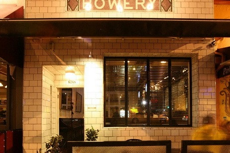

You should take it as a compliment
That I got drunk and made fun of the way you talk
You should think about the consequence
Of your magnetic field being a little too strong
And I got a boyfriend, he's older than us
He's in the club doing, I don't know what
You're so cool, it makes me hate you so much (I hate you so much)
 You've ruined my life, by not being mine
You're so gorgeous
I can't say anything to your face
'Cause look at your face
And I'm so furious
At you for making me feel this way
But, what can I say?
You're gorgeous
You should take it as a compliment
That I'm talking to everyone here but you (but you, but you)
And you should think about the consequence
Of you touching my hand in the darkened room (dark room, dark room)
If you've got a girlfriend, I'm jealous of her
But if you're single that's honestly worse
'Cause you're so gorgeous it actually hurts
(Honey, it hurts)
Ocean blue eyes looking in mine
I feel like I might sink and drown and die
You're so gorgeous
I can't say anything to your face (to your face)
'Cause look at your face (look at your face)
And I'm so furious
At you for making me feel this way
But what can I say?
You're gorgeous
You make me so happy, it turns back to sad, yeah
There's nothing I hate more than what I can't have
You are so gorgeous it makes me so mad
You make me so happy, it turns back to sad, yeah
There's nothing I hate more than what I can't have
Guess I'll just stumble on home to my cats
Alone, unless you wanna come along, oh
You're so gorgeous
I can't say anything to your face (to your face)
'Cause look at your face (look at your face)
And I'm so furious (I'm so furious)
At you for making me feel this way (feel this way)
But what can I say? (I say)
You're gorgeous
You make me so happy, it turns back to sad, yeah
There's nothing I hate more than what I can't have
You are so gorgeous it makes me so mad
You're gorgeous
You make me so happy, it turns back to sad, yeah
There's nothing I hate more than what I can't have
You are so gorgeous it makes me so mad
You're gorgeous